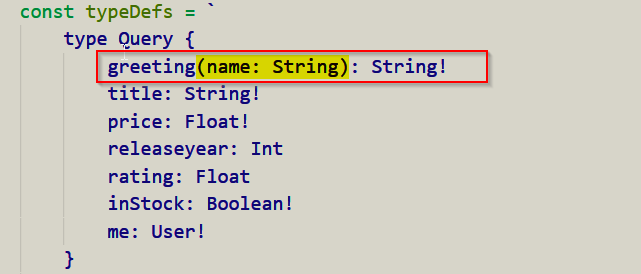

In typedefs, while defining a new query type do the following to get the input form client

Given below is an example of how you pass the data from graphql playgroud
Now inside resolvers access the data passed to graphql by using args like so